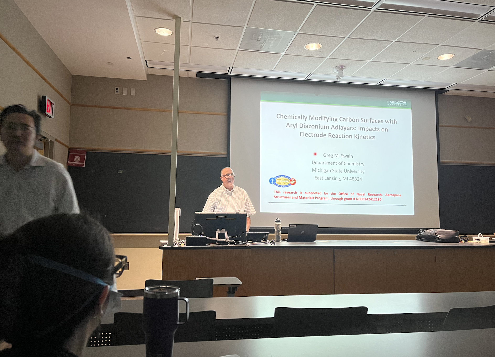
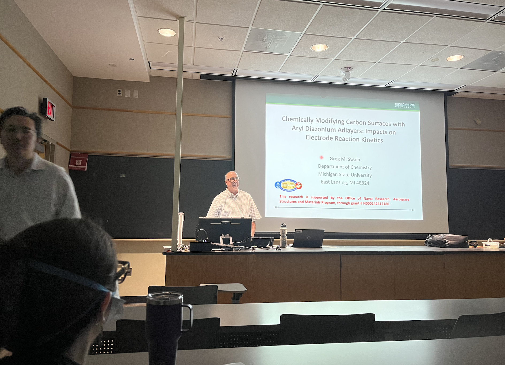
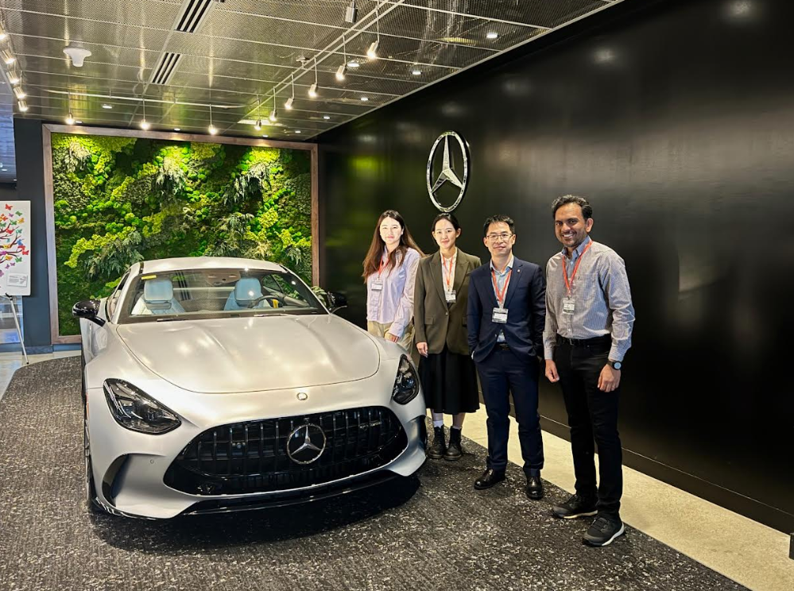
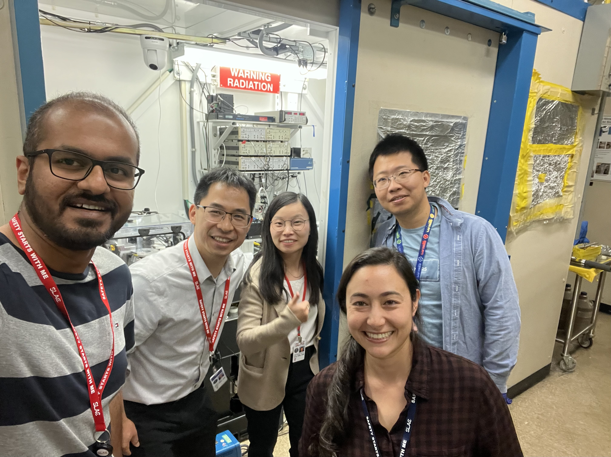
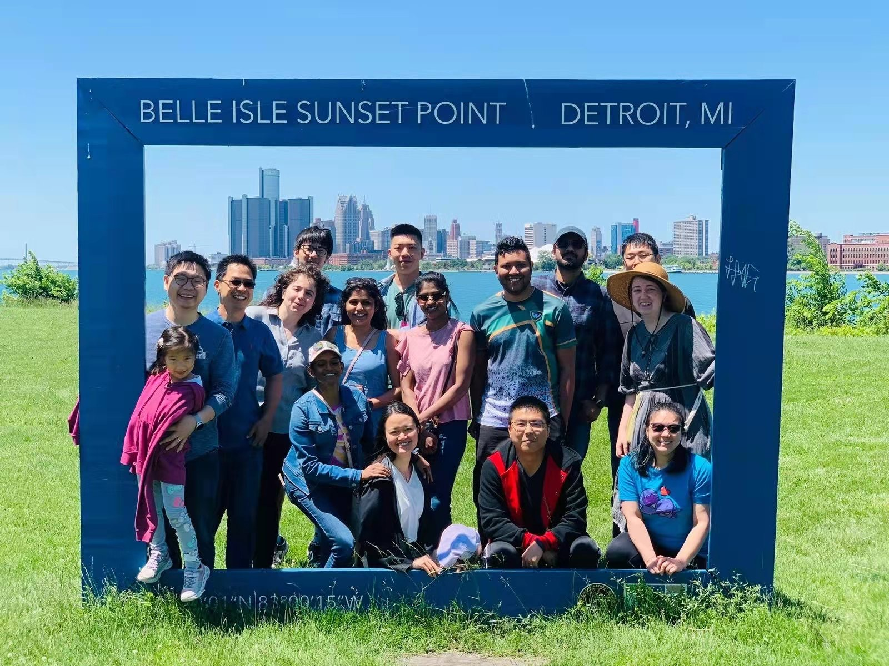

|
PI: Ankun Yang
News
- Sep 24, 2025: Together with the Department of Chemistry, the ECS Detroit Student Chapter hosted Prof. Greg Swain from Michigan State University, and he gave an excellent talk titled "Chemically Modifying Carbon Surfaces with Aryl Diazonium Adlayers: Impacts on Electrode Reaction Kinetics".
 

|
- July 30, 2025: Prag's paper reporting chemical generation of liquid sulfur at room temperature is accepted in ACS Nano. Congratulations! We appreciate the support from our collaborators!
- July 14, 2025: Xinran has successfully passed the Master's thesis defense. Congratulations!
- June 25, 2025: We have a new research paper on Na plasmonics, in collaboration with Dr. Peijun Guo from Yale, accepted by ACS Nano. Congratulations to Xinran and Hongyu!
- May 7-8, 2025: Ankun organized and chaired a session “Design and Engineering of Storage Devices” in Battery and Electric Vehicle (BEV) Congress 2025. Thanks to all invited speakers, and to Nasim and Tarek for the great support!
- May 2025: Chad graduated from OU and will join University of Illinois Urbana-Champaign (UIUC) to pursure graduate study. Congratulations and best wishes!
- Apr 28, 2025: Ankun received 2025 SECS Outstanding Research Award
- Apr 22-23, 2025: We have participated in the Li-metal battery workshop hosted by Mercedes-Benz. Thanks to Dr. Tobias Glossmann for the kind invitation.


|
- Apr 7, 2025: Emenike won Provost Graduate Student Research Award. Congratulations!
- Mar 5, 2025: Xinran gave a nice talk at the ME Graduate Seminar
- Mar 5, 2025: Ankun won University Research Committee (URC) Faculty Research Fellowship
- Feb 20, 2025: Ankun received 2025 New Investigator Research Excellence Award
- Feb 12, 2025: The ECS Detroit Student Chapter hosted Prof. Zhenfei Liu from Wayne State University, and he gave an excellent talk titled "Understanding energy conversion at heterogeneous interfaces from many-body perturbation theory". We also had a nice coffee hour and chat after the seminar!
- Feb 7, 2025: Emenike won Michigan Space Grant Consortium (MSGC) Graduate Fellowship. Congratulations!
- Jan 25, 2025: Yue and Ankun host high-school students and their family on the SECS day at the Battery Materials Lab
- Dec 13, 2024: ECS Detroit Student Chapter first in-person meet after new election
- Nov 2024: Xiaojun will join us Jan 2025. Welcome!
- Nov 18, 2024: Xinran and Chad participate in the video shooting for our new Master of Science in Energy Engineering degree program
- Nov 13-15, 2024: Prag and Ankun run synchrotron experiments at the SSRL (Stanford Synchrotron Radiation Lightsource). Thanks to Dr. Xueli Zheng, Dr. Hongchang Hao, and Dr. Eleanor Spielman-Sun for the great support!


|
- Nov 6, 2024: Salam gave a great talk at ME Graduate Seminar, you can check out his presentation here
- Sep 2024: Yue and Jacob join the group. Welcome!
- Aug 28, 2024: SECS's community project on the Next-Gen Electrification and Standards Facility is funded! The $3 million grant from NIST will significantly enhance OU's research capabilities. Thanks to NIST for the support! Thank all co-PIs and participants in this proposal!
- Aug 2024: Emenike joins the group. Welcome! Emenike is co-advised by Dr. Yang and Dr. Xia Wang.
- July 26, 2024: Our group just received an NSF grant to support our interdisciplinary research at the interface of nanophotonics and electrochemistry. Thanks to NSF for the support!
- May 9, 2024: Ankun gave a talk at Battery Congress
- May 2024: Eric graduated from OU and will join University of Michigan, Ann Arbor to pursure graduate study. Congratulations and best wishes!
- Apr 22, 2024: Ankun gave a talk at MRS Spring 2024 in Seattle
- Apr 15, 2024: We received a fund from Michigan Economic Development Corporation. Congratulations!
- Mar 2024: Xinran joins the group. Welcome!
- Mar 5, 2024: Chad is accepted into Electric Vehicle Center (EVC) REU program at University of Michigan. Congrats Chad!
- Feb 27, 2024: We have published a reveiw paper in Progress in Quantum Electronics with Dr. Danqing Wang. Congratulations, Danqing!
- Feb 12, 2024: Ankun won an award from Michigan Space Grant Consortium (MSGC)
- Jan 11, 2024: The ECS Detroit Student Chapter hosted Prof. Zhe Wang from Oakland University, and he gave a wonderful talk titled “Noncovalent Interaction-Based Selective Adsorption for Small Molecules in In-Field and Point-of-Care Electrochemical Sensor”.
- Dec 1, 2023: Eric shared his success story in our lab with SECS Golden Grizzlies Going Places! We wish you all the best in your future endeavors!
- Oct 5, 2023: Ankun gives a workshop lecture on batteries, hosted by the ECS Detroit Student Chapter
- July 26, 2023: Chad presents at 13th Mid-Michigan Symposium for Undergraduate Research Experiences (Mid-SURE)
- July 25, 2023: REU student Chad presents his summer research!
- July 18, 2023: Chad and Eric help with the SECS outreach activities!
- July 14, 2023: Zhi's paper on potassium and sodium-potassium plasmonics is accepted by Nano Letters. This is a collaboration work with Prof. Jae Yong Suh at Michigan Tech, Prof. Peijun Guo at Yale, and Prof. Hongwei Qu at OU. Congratulations and thank all collaborators!
- July 2023: Undergraduate student Hongyu joins the group. Welcome!
- May 2023: Ankun won the SECS Research Seed Grant, collaborating with Dr. Xia Wang
- May 2023: Ema will join us Fall 2023. Welcome!
- May 24, 2023: Undergraduate student Chad Gilbert joins the group. Welcome!
- May 4, 2023: The ECS Detroit Student Chapter hosted Prof. Laura Kiefer from Oakland University. She gave a great talk about her previous research and included Star Wars references in honor of May the Fourth!
- May 2023: Master student Tameem joins the group. Welcome!
- Apr 17, 2023: Zhi won Provost Graduate Student Research Award. Congratulations!
- Apr 12, 2023: Ankun gave a talk at MRS Spring 2023 in San Francisco
- Mar 30, 2023: Salam has successfully passed the qualifying exam. Congratulations!
- Mar 2023: Rutu will join us Fall 2023. Welcome!
- Feb 16, 2023: The ECS Detroit Student Chapter election - Thank Prag's service as vice President for the Chapter 2022-2023 and Zhi is now serving as the vice President from OU!
- Jan 18, 2023: Ankun gave a talk on the Li-S electrochemistry in OU Chemistry Department. Thank Dr. Xiangqun Zeng for the invitation!
- Jan 5, 2023: Our paper exploring alkali metals for photonics is accepted by Nano Letters. This is a collaboration work with Prof. Jae Yong Suh at Michigan Tech, Dr. David Czaplewski at ANL, and Prof. Hongwei Qu at OU. Congratulations and thank all collaborators!
- Dec 2022: Zikai will join Johns Hopkins University to pursure graduate study. Congratulations and best wishes!
- Dec 15, 2022: The ECS Detroit Student Chapter hosted Prof. Chengcheng Fang from Michigan State University. She gave a wonderful talk on "Mechano-electro-chemical Coupling in Lithium Metal Batteries".
- Dec 7, 2022: Salam won Provost Graduate Student Research Award. Congratulations!
- Dec 5, 2022: Ankun won University Research Committee (URC) Faculty Research Fellowship
- November 16, 2022: Salam has won the 2022 SECS Best Graduate Paper Award. Congratulations!
- September 29, 2022: Ankun gives a talk at Michgan Tech Physics department. Thanks Dr. Jae Yong Suh for the invitation!
- September 15, 2022: Yang Group at The Battery Show, North America 2022
- September 8, 2022: Ankun gives a workshop lecture through ECS Detroit Student Chapter on advanced batteries
- September 2022: Undergraduate student Owen joins the group, welcome!
- August 9, 2022: Our MRI proposal for acquiring a confocal Raman microscope/spectrometer to support multidisciplinary research at OU is awarded by NSF. Thanks to NSF and the univeristy for the generous support! Thank all co-PIs and participants in this proposal!
- July 28, 2022: The ECS Detroit Student Chapter hosted Prof. Lei Chen from University of Michigan- Dearborn. He gave an insightful talk on "Accelerated computational design of dendrite-free Li-ion batteries".
- July 27, 2022: Arthur and Jason present at 12th Mid-Michigan Symposium for Undergraduate Research Experiences (Mid-SURE)
- July 26, 2022: REU students Arthur and Jason present their summer research!
- July 13, 15, 2022: Yang Lab helps host K-12 students through SECS Summer Camps. Thanks Bianca and Nic! Thanks Zhi, Arthur, Jason and Zikai!
- June 18, 2022: ECS Detroit Student Chapter first in-person event (Barbecue) at Belle Isle!


|
- June 15, 2022: Ankun is elected as the Ambassador of ECS Detroit Section
- May 25, 2022: Jason (San Jose State University) and Arthur (Georgia College and State University) join the group from AERIM: Automotive and Energy Research and Industrial Mentorship Summer Research Experience for Undergraduates (REU) Program, welcome!
- May 23, 2022: Ankun gives a talk at MRS Spring meeting
- May 21, 2022: Our group alumni William Welch will join CalTech this Fall to pursue his PhD! Congratulations!
- May 2022: Undergraduate student Eric joins the group, welcome!
- April 2022: Ankun's research is highlighted in OU Magazine
- Mar 29, 2022: Prag won Provost Graduate StudentResearch Award. Congratulations!
- Feb 2022: Undergraduate student Zikai joins the group, welcome!
- Feb 24, 2022: Ankun gives a talk at the ECS Detroit Student Chapter. Thank Dr. Long Luo and the Student Chapter for the invitation!
- Jan 29, 2022: Ankun hosts high-school students and their family on the SECS day at the Materials Lab. Thank Zhi and Jianxin for the help!
- Dec 16, 2021: Our research on sodium plasmonics is highlighted in Oakland Enginering News
- Oct 29, 2021: Ankun presents a poster in SECS Research Expo 2021 to local industry
- Oct 25, 2021: Salam's paper on sodium plasmonics is accepted in the JPCC. Sylvia and William participated in the research as undergraduate researchers. Congratulations!
- Oct 25, 2021: Sylvia and William present in the Council on Undergraduate Research (CUR) Symposium
- July 28, 2021: Sylvia and William participate in the The 11th annual Mid-Michigan Symposium for Undergraduate Research Experiences (Mid-SURE)
- June 2021: Zhi, Abdelsalam and Pragadeesh join the group, welcome!
- May 19, 2021: Sylvia (OU) and William (UCLA) join the group from AERIM: Automotive and Energy Research and Industrial Mentorship Summer Research Experience for Undergraduates (REU) Program, welcome!
- May 13, 2021: Ankun presents at Battery 2021 Congress
- Apr 23, 2021: Ankun gives a talk at MRS Spring meeting
- March 2021: Ankun won University Research Committee (URC) Faculty Research Fellowship
- February 2021: Ankun won an award from Michigan Space Grant Consortium (MSGC), with a top-rated proposal
- August 2020: Ankun joins Mechanical Engineering department at Oakland University as an Assistant Professor
|